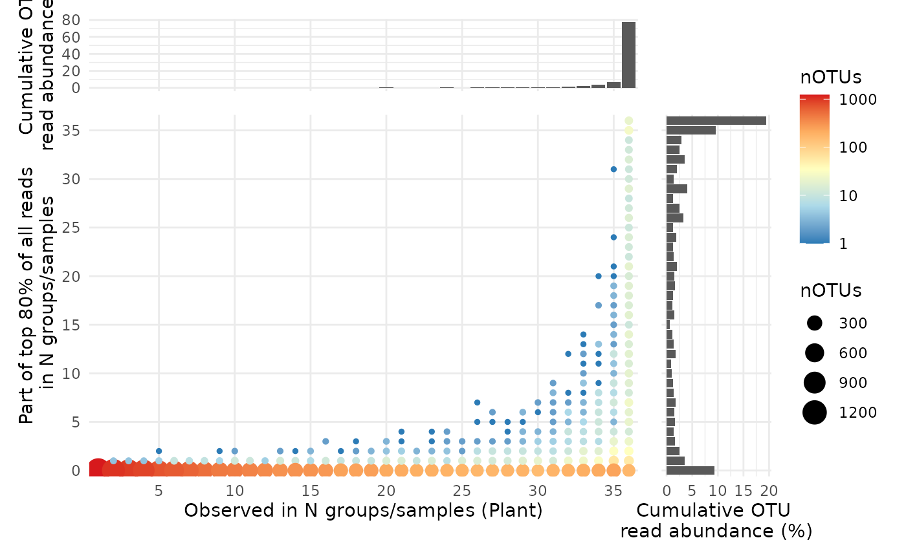

Core community plot to investigate how many of the most abundant OTU's comprise the "core" of groups of samples, their abundances etc.
(required) Data list as loaded with amp_load.
(required) Character vector of one or more variable name(s) in the sample metadata which contain the desired grouping of samples, fx where the samples have been taken. Can also be done by sample, just provide the name of the first variable containing unique sample ID's if so.
Threshold in percent for defining "abundant" a.k.a. "core" OTU's for each group. (default: 80)
Character vector defining which margin plots to show. Margin plots display the cumulative read abundances of all OTU's per group sharing either x or y axis with the main plot. Any of:
"x": Only show x axis margin plot.
"y": Only show y axis margin plot.
"xy" (default): Show both x and y margin plots.
"" or NULL (or anything else): Don't show any margin plots.
The size of the values indicated in the margin plots on top of the bars. Set to 0 to disable. (default: 3)
Numeric vector with relative widths of the main and y margin plots. (default: c(5,1))
Numeric vector with relative widths of the main and x margin plots. (default: c(1,5))
If no margin plots a ggplot object, otherwise a list with ggplot objects.
This analysis only makes sense without aggregating OTU's to any taxonomic level, or else it will be biased by taxonomy and only be done on OTU's that have been classified, which is rarely all.
ggsaveWhen any margin plots are generated amp_core returns a list of ggplot objects to allow adjusting themes etc. of the individual subplots. The list is of class coreplot and a matching print function for the S3 class then stitches together the individual plots using the patchwork package. Therefore to save the plot with ggsave simply pass on the plot object explicitly and wrap it in print(), see examples. This is not necessary if no margin plots are generated, as the returned object is then a regular ggplot object.
Marta Nierychlo, Kasper Skytte Andersen, Yijuan Xu, Nicholas Green, Chenjing Jiang, Mads Albertsen, Morten Simonsen Dueholm, Per Halkjær Nielsen (2020): "MiDAS 3: An ecosystem-specific reference database, taxonomy and knowledge platform for activated sludge and anaerobic digesters reveals species-level microbiome composition of activated sludge", Water Research, Volume 182. doi:10.1016/j.watres.2020.115955 Saunders, Aaron M; Albertsen, Mads; Vollertsen, Jes; Nielsen, Per H (2016): "The activated sludge ecosystem contains a core community of abundant organisms", ISME Journal 10, 11-20. doi:10.1038/ismej.2015.117
# load example data
data("MiDAS")
# generate core analysis plot grouped by WWTP
plot <- amp_core(
data = MiDAS,
group_by = "Plant",
core_pct = 80,
margin_plots = "xy",
margin_plot_values_size = 0 # set to 0 to not show values in margin plots
)
# adjust axes manually
plot$mainplot <- plot$mainplot +
scale_x_discrete(breaks = seq(from = 0, to = 36, by = 5)) +
scale_y_discrete(breaks = seq(from = 0, to = 36, by = 5))
plot$marginplot_x <- plot$marginplot_x + scale_x_discrete(breaks = seq(from = 0, to = 36, by = 5))
plot$marginplot_y <- plot$marginplot_y + scale_x_discrete(breaks = seq(from = 0, to = 36, by = 5))
# show plot
plot

# To save the plot with ggsave() wrap the plot object in print()
# ggsave("plot.png", print(plot))